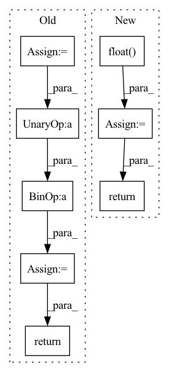

Pattern ID :2029
Before Change
def forward(self, x):
device = x.device
half_dim = self.dim // 2
emb = math.log(10000) / (half_dim - 1)
emb = torch.exp(torch.arange(half_dim, device=device) * - emb)
emb = x[:, None] * emb[None, :]
emb = torch.cat((emb.sin(), emb.cos()), dim=-1)
return emb
class Mish(nn.Module):After Change
def forward(self, input):
shape = input.shape
sinusoid_in = torch.ger(input.view(-1).float() , self.inv_freq)
pos_emb = torch.cat([sinusoid_in.sin(), sinusoid_in.cos()], dim=-1)
pos_emb = pos_emb.view(*shape, self.dim)
return pos_emb
class Swish(nn.Module):In pattern: SUPERPATTERN
Frequency: 3
Non-data size: 8
Instances Fragment ID: 13796690
Project Name: janspiry/image-super-resolution-via-iterative-refinement
Commit Name: a843610e321ec7e1898e97dd495f8991182b8b87
Time: 2021-07-30
Author: lw_jiang@foxmail.com
File Name: model/unet.py
M Class Name: SinusoidalPosEmb
N Class Name: TimeEmbedding
M Method Name: forward(2)
N Method Name: forward(2)
M Parent Class: nn.Module
N Parent Class: nn.Module
M File Name: model/unet.py
N File Name: model/unet.py
M Start Line: 37
M End Line: 42
N Start Line: 32
N End Line: 36
Before Change
def forward(self, x):
device = x.device
half_dim = self.dim // 2
emb = math.log(10000) / (half_dim - 1)
emb = torch.exp(torch.arange(half_dim, device=device) * - emb)
emb = x[:, None] * emb[None, :]
emb = torch.cat((emb.sin(), emb.cos()), dim=-1)
return emb
class Mish(nn.Module):After Change
def forward(self, input):
shape = input.shape
sinusoid_in = torch.ger(input.view(-1).float() , self.inv_freq)
pos_emb = torch.cat([sinusoid_in.sin(), sinusoid_in.cos()], dim=-1)
pos_emb = pos_emb.view(*shape, self.dim)
return pos_emb
class Swish(nn.Module): Fragment ID: 13796694
Project Name: janspiry/image-super-resolution-via-iterative-refinement
Commit Name: 519d366759ea639a68262c20661fa8af7e85cfc6
Time: 2021-07-30
Author: jiangliangwei@tetras.com
File Name: model/unet.py
M Class Name: SinusoidalPosEmb
N Class Name: TimeEmbedding
M Method Name: forward(2)
N Method Name: forward(2)
M Parent Class: nn.Module
N Parent Class: nn.Module
M File Name: model/unet.py
N File Name: model/unet.py
M Start Line: 37
M End Line: 42
N Start Line: 32
N End Line: 36
Before Change
super().__init__()
def forward(self, x):
return x
After Change
// sample random times
times = torch.zeros((batch,), device = device).float() .uniform_(0, 1.)
// noise sample
noise = torch.randn_like(img)
noise_level = self.log_snr(times)
padded_noise_level = right_pad_dims_to(img, noise_level)
alpha, sigma = log_snr_to_alpha_sigma(padded_noise_level)
noised_img = alpha * img + sigma * noise
// if doing self-conditioning, 50% of the time, predict x_start from current set of times
// and condition with unet with that
// this technique will slow down training by 25%, but seems to lower FID significantly
self_cond = None
if random() < 0.5:
with torch.no_grad():
self_cond = self.model(noised_img, noise_level).detach_()
// predict and take gradient step
pred = self.model(noised_img, noise_level, self_cond)
return F.mse_loss(pred, img)
// trainer class
Fragment ID: 13796699
Project Name: lucidrains/chroma-pytorch
Commit Name: aed1623c205056b5a530d116d30f647eb6693b14
Time: 2022-12-04
Author: lucidrains@gmail.com
File Name: chroma_pytorch/chroma_pytorch.py
M Class Name: Chroma
N Class Name: Chroma
M Method Name: forward(2)
N Method Name: forward(2)
M Parent Class: nn.Module
N Parent Class: nn.Module
M File Name: chroma_pytorch/chroma_pytorch.py
N File Name: chroma_pytorch/chroma_pytorch.py
M Start Line: 11
M End Line: 11
N Start Line: 506
N End Line: 536